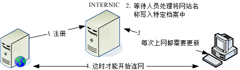
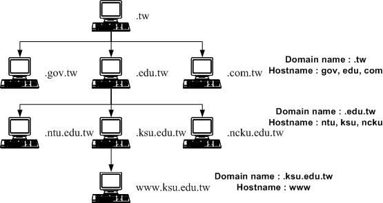
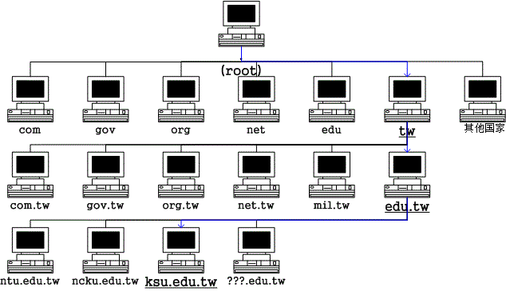
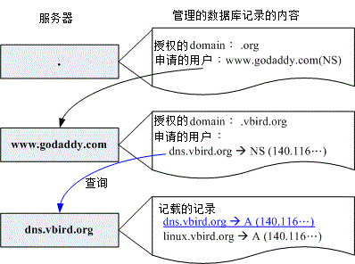

19.1 什么是 DNS
DNS 越来越重要，尤其未来 IPv6 这个需要 128bits 地址的玩意儿。因为我们连 IPv4 的 32bits 都背不起来了， 128bits 要怎么背？ 这时主机名自动解析为 IP 就很重要啦！那就是 DNS。但是 DNS 的架设有点麻烦，重点是原理的部分比较不好理解。 因此在这个小节当中，让我们先来谈谈与网络主机名有关的一些知识，这样架设 DNS 才不会出问题。
19.1.1 用网络主机名取得 IP 的历史渊源
目前的因特网世界使用的是所谓的 TCP/IP 协议，其中 IP 为第四版的 IPv4 。不过，这个 IPv4 是由 32 位所组成，为了人脑已经转成四组十进制的数字了，例如 12.34.56.78 这样的格式。当我们利用 Internet 传送数据的时候，就需要这个 IP ，否则数据封包怎么知道要被送到哪里去？
- 单一档案处理上网的年代： /etc/hosts
然而人脑对于 IP 这种数字的玩意儿，记忆力实在是不怎么样。但是要上 Internet 又一定需要 IP，怎么办？为了应付这个问题， 早期的朋友想到一个方法，那就是利用某些特定的档案将主机名与 IP 作一个对应， 如此一来，我们就可以透过主机名来取得该主机的 IP 了！真是个好主意，因为人类对于名字的记忆力可就好多了！ 那就是 /etc/hosts 这个档案的用途了。
可惜的是，这个方法还是有缺憾的，那就是主机名与 IP 的对应无法自动于所有的计算机内更新， 且要将主机名加入该档案仅能向 INTERNIC 注册，若 IP 数量太多时，该档案会大到不象话，也就更不利于其他主机同步化了。 如下图所示，客户端计算机每次都得要重新下载一次档案才能顺利联网！
 图 19.1-1、早期透过单一档案进行网络联机的示意图
在第四章 4.2.1 里面我们约略谈过 /etc/hosts 这个档案的用法，基本上该档案内容就是『IP 主机名 主机别名一 主机别名二...』。在里面最重要的就是 localhost 对应到 127.0.0.1 这个咚咚！你千万不能删除该笔记录的。这里也再次强调，在你的私有网域内部，最好将所有的私有 IP 与主机名对应都写入这个档案中啦！
- 分布式、阶层式主机名管理架构： DNS 系统
早期网络尚未流行且计算机数量不多时，/etc/hosts 倒是还够用的，但自从 90 年代网络热门化后，单一档案 /etc/hosts 的联网问题就发生上面讲的状况啦！为了解决这个日益严重的问题，柏克莱大学发展出另外一套阶层式管理主机名对应 IP 的系统， 我们称它为 Berkeley Internet Name Domain, BIND ，这个系统可就优秀的多了～ 透过阶层式管理，可以轻松的进行维护的工作～太棒了！这也是目前全世界使用最广泛的领域名系统 (Domain Name System, DNS) 哩～透过 DNS ，我们不需要知道主机的 IP ，只要知道该主机的名称，就能够轻易的连上该主机了！
DNS 利用类似树状目录的架构，将主机名的管理分配在不同层级的 DNS 服务器当中，经由分层管理， 所以每一部 DNS 服务器记忆的信息就不会很多，而且若有 IP 异动时也相当容易修改！因为你如果已经申请到主机名解析的授权， 那么在你自己的 DNS 服务器中，就能够修改全世界都可以查询到的主机名了！而不用透过上层 ISP 的维护呢！ 自己动手当然是最快的啦！
由于目前的 IPv4 已经接近发送完毕的阶段，因此未来那个 128bits 的 IPv6 会逐渐热门起来。那么你需要背 128bits 的 IP 来上网吗？想必是不可能的！因此这个可以透过主机名就解析到 IP 的 DNS 服务，可以想象的到，它会越来越重要。此外，目前全世界的 WWW 主机名也都是透过 DNS 系统在处理 IP 的对应，所以，当 DNS 挂点时，我们将无法透过主机名来联机，那就几乎相当于没有 Internet 了！
因为 DNS 是这么的重要，所以即使我们没有架设它的必要时，还是得要熟悉一下它的原理才好。因此，跟 DNS 有关的 FQDN、Hostname 与 IP 的查询流程，正解与反解、合法授权的 DNS 服务器之意义，以及 Zone 等等的知识作一个认识才行！
Tips: 在底下的说明当中，我们有时会提到 DNS 有时会提到 BIND ，这有什么不同？ 由上面的说明里面，你可以了解到， DNS 是一种因特网的通讯协议名称， 至于 Bind 则是提供这个 DNS 服务的软件～这样你了解了吗？！

- 完整主机名： Fully Qualified Domain Name (FQDN)
第一个与 DNS 有关的主机名概念，就是『主机名与领域名 (hostname and domain name)』的观念，以及由这两者组成的完整主机名 Fully Qualified Domain Name, FQDN 的意义了。在讨论这个主题之前，我们来聊一聊比较生活化的话题：
以区域来区分同名同姓者的差异： 网络世界其实有很多人自称为『鸟哥』的，包括敝人在下小生我啦！那么你怎么知道此鸟哥非彼鸟哥呢？ 这个时候你可以利用每个鸟哥的所在地来作为区分啊，比如说台南的鸟哥与台北的鸟哥等。 那万一台南还有两个人自称鸟哥怎么办？没关系，你还可以依照乡镇来区分呢！比如说台南北区的鸟哥及台南中区的鸟哥。 如果将这个咚咚列出来，就有点像这样：
| 鸟哥、北区、台南 鸟哥、中区、台南 鸟哥、台北 ...... |是否就可以分辨每个鸟哥的不同点了呢？呵呵！没错！就是这样！那个地区就是『领域 (domain) 』，而鸟哥就是主机名啦！
以区域号码来区分相同的电话号码： 另外一个例子可以使用电话号码来看，假如高雄有个 1234567 而台南也有个 1234567，那么(1)你在高雄直接拨接 1234567 时，他会直接挂入高雄的 1234567 电话中，(2)但如果你要拨到台南去，就得加入 (06) 这个区码才行！我们就是使用区码来做为辨识之用的！此时那个 06 区码就是 domain name，而电话号码就是主机名啦！
有没有一点点了解鸟哥想表达的啦？我们上面讲到，DNS 是以树状目录分阶层的方式来处理主机名，那我们知道树状目录中， 那个目录可以记录文件名。那么 DNS 记录的哪个咚咚跟『目录』有关？就是那个领域名。领域名底下还可以记录各个主机名， 组合起来才是完整的主机名 (FQDN)。
举例来说，我们常常会发现主机名都是 www 的网站，例如 www.google.com.tw, www.seednet.net, www.hinet.net 等等，那么我们怎么知道这些 www 名称的主机在不同的地方呢？就需要给他领域名啰！也就是 .google.com.tw, .seednet.net, .hinet.net 等等的不同，所以即使你的主机名相同，但是只要不是在同一个领域内，那么就可以被分辨出不同的位置啰！
我们知道目录树的最顶层是根目录 (/)，那么 DNS 既然也是阶层式的，最顶层是啥呢？每一层的 domain name 与 hostname 又该怎么分？我们举鸟哥所在的昆山科大的 WWW 服务器为例好了 (www.ksu.edu.tw) ：
 图 19.1-2、分阶层的 DNS 架构，以昆山科大为例 (hostname & domain name)
在上面的例子当中，由上向下数的第二层里面，那个 .tw 是 domain name ，而 com, edu, gov 则是主机的名称，而在这个主机的名称之管理下，还有其他更小网域的主机，所以在第三层的时候，基本上，那个 edu.tw 就变成了 domain name 了！而昆山科大与成大的 ksu, ncku 则成为了 hostname 啰！
以此类推，最后得到我们的主机那个 www 是主机名，而 domain name 是由 ksu.edu.tw 那个名字所决定的！自然，我们的主机就是让管理 ksu.edu.tw 这个 domain name 的 DNS 服务器所管理的啰！这样是否了解了 domain name 与 hostname 的不同了呢？
Tips: 并不是以小数点 (.) 区分 domain name 与 hostname 喔！某些时刻 domain name 所管理的 hostname 会含有小数点。 举例来说，鸟哥所在的信息传播系并没有额外的 DNS 服务器架设，因此我们的主机名为 www.dic ，而 domain name 还是 ksu.edu.tw ，因此全名为 www.dic.ksu.edu.tw 哩！
19.1.2 DNS 的主机名对应 IP 的查询流程
约略了解了 FQDN 的 domain name 与 hostname 之后，接下来我们要谈一谈这个 DNS 的： (1)阶层架构是怎样？ (2)查询原理是怎样？总是要先知道架构才能知道如何查询主机名的吶！所以底下我们先来介绍一下整体的 DNS 阶层架构。
- DNS 的阶层架构与 TLD
我们依旧使用台湾学术网络的 DNS 服务器所管理的各 domain 为例，将最上层到昆山科大 (ksu) 时，之间的各层绘制如下图：
 图 19.1-3、从最上层到昆山科大之间的 DNS 阶层示意图
在整个 DNS 系统的最上方一定是 . (小数点) 这个 DNS 服务器 (称为 root)，最早以前它底下管理的就只有 (1)com, edu, gov, mil, org, .net 这种特殊领域以及 (2)以国家为分类的第二层的主机名了！这两者称为 Top Level Domains (TLDs) 喔！
- 一般最上层领域名 (Generic TLDs, gTLD)：例如 .com, .org, .gov 等等
- 国码最上层领域名 (Country code TLDs, ccTLD)：例如 .tw, .uk, .jp, .cn 等
先来谈谈一般最上层领域 (gTLD) 好了，最早 root 仅管理六大领域名，分别如下：
| 名称 | 代表意义 |
|---|---|
| com | 公司、行号、企业 |
| org | 组织、机构 |
| edu | 教育单位 |
| gov | 政府单位 |
| net | 网络、通讯 |
| mil | 军事单位 |
但是因特网成长的速度太快了，因此后来除了上述的六大类别之外，还有诸如 .asia, .info, .jobs (注1) 等领域名的开放。此外，为了让某些国家也能够有自己的最上层领域名，因此， 就有所谓的 ccTLD 了。这样做有什么好处呢？因为自己的国家内有最上层 ccTLD ，所以如果有 domain name 的需求，则只要向自己的国家申请即可，不需要再到最上层去申请啰！
- 授权与分层负责
既然 TLD 这么好，那么是否我们可以自己设定 TLD 呢？当然不行！因为我们得向上层 ISP 申请领域名的授权才行。例如台湾地区最上层的领域名是以 .tw 为开头，管理这个领域名的机器 IP 是在台湾，但是 .tw 这部服务器必须向 root (.) 注册领域名查询授权才行 (如上图 19.1-3 所示)。
那么每个国家之下记录的主要下层有哪些领域呢？基本上就是原先 root 管理的那六大类。 不过，由于各层 DNS 都能管理自己辖下的主机名或子领域，因此，我们的 .tw 可以自行规划自己的子领域名喔！ 例如目前台湾 ISP 常提供的 .idv.tw 的个人网站就是一例啊！
再强调一次，DNS 系统是以所谓的阶层式的管理，所以，请注意喔！那个 .tw 只记录底下那一层的这数个主要的 domain 的主机而已！至于例如 edu.tw 底下还有个 ksu.edu.tw 这部机器，那就直接授权交给 edu.tw 那部机器去管理了！也就是说『 每个上一层的 DNS 服务器所记录的信息，其实只有其下一层的主机名而已！ 』至于再下一层，则直接『授权』给下层的某部主机来管理啰！呵呵！所以你就应该会知道 DNS 到底是如何管理的吧！
会这样设定的原因不是没有道理的！这样设计的好处就是：每部机器管理的只有下一层的 hostname 对应 IP 而已，所以减少了管理上的困扰！而下层 Client 端如果有问题，只要询问上一层的 DNS server 即可！不需要跨越上层，除错上面也会比较简单呢！
- 透过 DNS 查询主机名 IP 的流程
刚刚说过 DNS 是以类似『树状目录』的型态来进行主机名的管理的！所以每一部 DNS 服务器都『仅管理自己的下一层主机名的转译』而已， 至于下层的下层，则『授权』给下层的 DNS 主机来管理啦！这样说好像很绕口，好吧！我们就以下图来说一说原理啰：
 图 19.1-4、透过 DNS 系统查询主机名解译的流程
图 19.1-4、透过 DNS 系统查询主机名解译的流程
首先，当你在浏览器的网址列输入 http://www.ksu.edu.tw 时，你的计算机就会依据相关设定 (在 Linux 底下就是利用 /etc/resolv.conf 这个档案) 所提供的 DNS 的 IP 去进行联机查询了。由于目前最常见的 DNS 服务器就属 Hinet 的 168.95.1.1 这个 DNS，所以我们就拿他来做例子吧！嗯！这个时候，hinet 的这部服务器会这样工作：
收到用户的查询要求，先查看本身有没有纪录，若无则向 . 查询： 由于 DNS 是阶层式的架构，每部主机都会管理自己辖下的主机名解译而已。因为 hinet 并没有管理台湾学术网络的权力， 因此就无法直接回报给客户端。此时 168.95.1.1 就会向最顶层，也就是 . (root) 的服务器查询相关 IP 信息。
向最顶层的 . (root) 查询： 168.95.1.1 会主动的向 . 询问 www.ksu.edu.tw 在哪里呢？但是由于 . 只记录了 .tw 的信息 (因为台湾只有 .tw 向 . 注册而已)，此时 . 会告知『我是不知道这部主机的 IP 啦，不过，你应该向 .tw 去询问才对，我这里不管！ 我跟你说 .tw 在哪里吧！』
向第二层的 .tw 服务器查询： 168.95.1.1 接着又到 .tw 去查询，而该部机器管理的又仅有 .edu.tw, .com.tw, gov.tw... 那几部主机，经过比对后发现我们要的是 .edu.tw 的网域，所以这个时候 .tw 又告诉 168.95.1.1 说：『你要去管理 .edu.tw 这个网域的主机那里查询，我有他的 IP ！』
向第三层的 .edu.tw 服务器查询： 同理可证， .edu.tw 只会告诉 168.95.1.1 ，应该要去 .ksu.edu.tw 进行查询，这里只能告知 .ksu.edu.tw 的 IP 而已。
向第四层的 .ksu.edu.tw 服务器查询： 等到 168.95.1.1 找到 .ksu.edu.tw 之后， Bingo ！.ksu.edu.tw 说：『没错！这部主机名是我管理的～ 我跟你说他的 IP 是...所以此时 168.95.1.1 就能够查到 www.ksu.edu.tw 的 IP 啰！
记录暂存内存并回报用户： 查到了正确的 IP 后，168.95.1.1 的 DNS 机器总不会在下次有人查询 www.ksu.edu.tw 的时候再跑一次这样的流程吧！ 粉远粉累的吶！而且也很耗系统的资源与网络的带宽，所以呢，168.95.1.1 这个 DNS 会很聪明的先记录一份查询的结果在自己的暂存内存当中，以方便响应下一次的相同要求啊！ 最后则将结果回报给 client 端！当然啦，那个记忆在 cache 当中的数据，其实是有时间性的，当过了 DNS 设定记忆的时间 (通常可能是 24 小时)，那么该记录就会被释放喔！
整个分层查询的流程就是这样，总是得要先经过 . 来向下一层进行查询，最终总是能得到答案的。这样分层的好处是：
主机名修改的仅需自己的 DNS 更动即可，不需通知其他人： 当一个『合法』的 DNS 服务器里面的设定修改了之后，来自世界各地任何一个 DNS 的要求，都会正确无误的显示正确的主机名对应 IP 的信息，因为他们会一层一层的寻找下来。所以，要找你的主机名对应的 IP 就一定得要透过你的上层 DNS 服务器的纪录才行！因此，只要你的主机名字是经过上层『合法的 DNS』服务器设定的，那么就可以在 Internet 上面被查询到啦！呵呵！很简单维护吧，机动性也很高。
DNS 服务器对主机名解析结果的快取时间： 由于每次查询到的结果都会储存在 DNS 服务器的高速缓存中，以方便若下次有相同需求的解析时，能够快速的响应。 不过，查询结果已经被快取了，但是原始 DNS 的主机名与 IP 对应却修改了，此时若有人再次查询， 系统可能会回报旧的 IP 喔！所以，在快取内的答案是有时间性的！通常是数十分钟到三天之内。 这也是为什么我们常说当你修改了一个 domain name 之后，可能要 2 ~ 3 天后才能全面的启用的缘故啦！
可持续向下授权 (子领域名授权)： 每一部可以记录主机名与 IP 对应的 DNS 服务器都可以随意更动他自己的数据库对应， 因此主机名与域名在各个主机底下都不相同。举例来说， idv.tw 是仅有台湾才有这个 idv 的网域～ 因为这个 idv 是由 .tw 所管理的，所以只要台湾 .tw 维护小组同意，就能够建立该网域喔！
好啦！既然 DNS 这么棒，然后我们又需要架站，所以需要一个主机的名称，那么我们需要架设 DNS 了吗？当然不是，为什么呢？刚刚鸟哥提到了很多次的『合法』的字眼，因为他就牵涉到『授权』的问题了！ 我们在第十章当中也提到，只要主机名合法即可，不见得需要架设 DNS 的啦！
例题：透过 dig 实作出本小节谈到的 . --> .tw --> .edu.tw --> .ksu.edu.tw --> www.ksu.edu.tw 的查询流程，并分析每个查询阶段的 DNS 服务器有几部？答：事实上，我们可以透过第四章约略谈过的 dig 这个指令来实作出喔！使用追踪功能 (+trace) 就能够达到这个目的了。使用方式如下：
[root@www ~]# dig +trace www.ksu.edu.tw
; <<>> DiG 9.3.6-P1-RedHat-9.3.6-16.P1.el5 <<>>+trace www.ksu.edu.tw
;; global options: printcmd
. 486278 IN NS a.root-servers.net.
. 486278 IN NS b.root-servers.net.
....(底下省略)....
# 上面的部分在追踪 . 的服务器，可从 a ~ m.root-servers.net.
;; Received 500 bytes from 168.95.1.1#53(168.95.1.1) in 22 ms
tw. 172800 IN NS ns.twnic.net.
tw. 172800 IN NS a.dns.tw.
tw. 172800 IN NS b.dns.tw.
....(底下省略)....
# 上面的部分在追踪 .tw. 的服务器，可从 a ~ h.dns.tw. 包括 ns.twnic.net.
;; Received 474 bytes from 192.33.4.12#53(c.root-servers.net) in 168 ms
edu.tw. 86400 IN NS a.twnic.net.tw.
edu.tw. 86400 IN NS b.twnic.net.tw.
# 追踪 .edu.tw. 的则有 7 部服务器
;; Received 395 bytes from 192.83.166.11#53(ns.twnic.net) in 22 ms
ksu.edu.tw. 86400 IN NS dns2.ksu.edu.tw.
ksu.edu.tw. 86400 IN NS dns3.twaren.net.
ksu.edu.tw. 86400 IN NS dns1.ksu.edu.tw.
;; Received 131 bytes from 192.83.166.9#53(a.twnic.net.tw) in 22 ms
www.ksu.edu.tw. 3600 IN A 120.114.100.101
ksu.edu.tw. 3600 IN NS dns2.ksu.edu.tw.
ksu.edu.tw. 3600 IN NS dns1.ksu.edu.tw.
ksu.edu.tw. 3600 IN NS dns3.twaren.net.
;; Received 147 bytes from 120.114.150.1#53(dns2.ksu.edu.tw) in 14 ms
最终的结果有找到 A (Address) 是 120.114.100.101，不过这个例题的重点是，要让大家瞧瞧整个 DNS 的搜寻过程！ 在 dig 加上 +trace 的选项后，就能够达到这个目的。至于其他的都是服务器 (NS) 的设定值与追踪过程喔！ 有没有很清楚啊？^_^。至于 A 与 NS 等相关的数据，我们在后续的 DNS 数据库介绍中，再分别介绍啰。
- DNS 使用的 port number
好了，既然 DNS 系统使用的是网络的查询，那么自然需要有监听的 port 啰！没错！很合理！那么 DNS 使用的是那一个 port 呢？那就是 53 这个 port 啦！你可以到你的 Linux 底下的 /etc/services 这个档案看看！搜寻一下 domain 这个关键词，就可以查到 53 这个 port 啦！
但是这里需要跟大家报告的是，通常 DNS 查询的时候，是以 udp 这个较快速的数据传输协议来查询的， 但是万一没有办法查询到完整的信息时，就会再次的以 tcp 这个协定来重新查询的！所以启动 DNS 的 daemon (就是 named 啦) 时，会同时启动 tcp 及 udp 的 port 53 喔！所以，记得防火墙也要同时放行 tcp, udp port 53 呢！
19.1.3 合法 DNS 的关键：申请领域查询授权
什么？DNS 服务器的架设还有『合法』与『不合法』之分喔？不是像其他的服务器一样，架设好之后人家就查的到吗？ 非也非也！为什么呢？底下我们就来谈一谈。
- 向上层领域注册取得合法的领域查询授权
我们在第十章也讲过，申请一个合法的主机名就是需要注册， 注册就是需要花钱啦！那么注册取得的资料有两种，一种是第十章谈到的 FQDN (主机名)，一种就是申请领域查询权。所谓的 FQDN 就是我们只需要主机名，详细的设定数据就由 ISP 帮我们搞定。例如图 19.1-4 所示， 那部 www.ksu.edu.tw 的详细主机名对应 IP 的数据就是请管理 .ksu.edu.tw 那个领域的服务器搞定的。
那什么是领域查询授权呢？同样用图 19.1-4 来解释，我们的 .ksu.edu.tw 必须要向 .edu.tw 那部主机注册申请领域授权，因此，未来有任何 .ksu.edu.tw 的要求时， .edu.tw 都会说：『我不知道！ 详情请去找 .ksu.edu.tw 吧！』此时，我们就得要架设 DNS 服务器来设定 .ksu.edu.tw 相关的主机名对应才行喔！ 是否很像人类社会的『授权』的概念？
也就是说，当你老板充分的『授权』给你某项工作的时候，从此，要进行该项工作的任何人， 从老板那边知道你才是真正『有权』的人之后，都必须要向你请示一样！^_^！所以啰，如果你要架设 DNS ，而且是可以连上 Internet 上面的 DNS 时，你就必须要透过『上层 DNS 服务器的授权』才行！这是很重要的观念喔！
让我们归纳一下，要让你的主机名对应 IP 且让其他计算机都可以查询的到，你有两种方式：
- 上层 DNS 授权领域查询权，让你自己设定 DNS 服务器，或者是；
直接请上层 DNS 服务器来帮你设定主机名对应！
拥有领域查询权后，所有的主机名信息都以自己为准，与上层无关
很多朋友可能都有过申请 DNS 领域查询授权的经验，在申请时，ISP 就会要你填写 (1)你的 DNS 服务器名称以及 (2)该服务器的 IP。既然已经在 ISP 就填写了主机名与 IP 的对应，所以，即使我的 DNS 服务器挂点了，在 ISP 上面的主机名应该还是查到的 IP 吧？答案是：『错！』查不到的！为什么呢？
DNS 系统记录的信息非常的多，不过重点其实有两个，一个是记录服务器所在的 NS (NameServer) 标志，另一个则是记录主机名对应的 A (Address) 标志。我们在网络上面查询到的最终结果，都是查询 IP (IP Address) 的，因此最终的标志要找的是 A 这个记录才对！我们以鸟哥注册的 .vbird.org 来说明好了，鸟哥去注册时， 记录在 ISP 的 DNS 服务器名称为 dns.vbird.org，该笔记录其实就是 NS ，并非 A ，如下图所示：
 图 19.1-5、记录的授权主机名与实际 A 记录的差异
上图中，虽然在 godaddy 服务器内有记录一笔『要查询 .vbird.org 时，请到 dns.vbird.org (NS) 去查，这个管理者的 IP 是 140.116...』，但是这笔记录只是告诉我们要去下一个服务器找，并不是最终的 A (IP Address) 的答案，所以还得要继续往下找 (随时记得图 19.1-4 的查询流程)。此时，有几种结果会导致 dns.vbird.org 的 IP 找不到，或者是最终的 IP 与 godaddy 记录的不同的结果喔！那就是：
dns.vbird.org 服务器挂点时： 如果 dns.vbird.org 这部主机挂点，那么在上图显示『查询』箭头的步骤会被中断，因此就会出现『联机不到 dns.vbird.org 的 IP』的结果。因为无论如何，DNS 系统都会去找到最后一个含有 A 地址的记录啊！
dns.vbird.org 服务器内的数据库忘记补上数据时： 如果鸟哥在自己的服务器数据库中，忘记加上 dns.vbird.org 的记录时，最终的结果还是会显示『找不到该服务器的 IP』；
dns.vbird.org 服务器内的数据库数据编写不一致时： 如果是在鸟哥自己服务器的数据库内的 dns.vbird.org 所记录的 IP 与 godaddy 的不同，最终的结果会以鸟哥记录的为准。
总之，你在 ISP 上面填写的主机名只是一个参考用的，最终还是要在你自己 DNS 服务器当中设定好才行！ 虽然可以自己恶搞一下，不过，通常大家还是会让 ISP 上面的 DNS 服务器主机名与自己的数据库主机名一致， 亦即上图中，中间与最下面方框内的 dns.vbird.org 的 NS 及 A 都对应到同一个 IP 就是了。
19.1.4 主机名交由 ISP 代管还是自己设定 DNS 服务器
前面 19.1.3 小节以及第十章都谈过，申请主机名或域名主要有两种方式，就是刚刚上头提到的 DNS 授权，或者是直接交给 ISP 来管理。交给 ISP 管理的，就可以称作是域名代管啦！当然啦，如果你是学校单位的话， 或者是企业内部的小单位，那么就得请你向上层 DNS 主机的负责人要求啰！无论如何，你只能有两个选择就是了，要不就是请他帮忙你设定好 hostname 对应 IP ，要嘛就是请他直接将某个 domain name 段授权给你做为 DNS 的主要管理网域。
那么我怎么知道那个方式对我比较好呢？请注意，由于 DNS 架设之后，会多出一个监听的 port ，所以理论上，是比较不安全的！而且，由于因特网现在都是透过主机名在联机，在了解上面谈到的主机名查询流程后， 你会发现，DNS 设定错误是很要命的！因为你的主机名再也找不到了。所以，这里的建议是：
需要架设 DNS 的时机：
你所负责需要连上 Internet 的主机数量庞大：例如你一个人负责整个公司十几部的网络 Server，而这些 Server 都是挂载你的公司网域之下的。这个时候想要不架设 DNS 也粉难啦！
你可能需要时常修改你 Server 的名字，或者是你的 Server 有随时增加的可能性与变动性；
不需要架设 DNS 的时机：
网络主机数量很少：例如家里或公司只有需要一部 mail server 时；
- 你可以直接请上层 DNS 主机管理员帮你设定好 Hostname 的对应时；
- 你对于 DNS 的认知不足时，如果架设反而容易造成网络不通的情况；
- 架设 DNS 的费用很高时！
19.1.5 DNS 数据库的记录：正解, 反解, Zone 的意义
从前面的图 19.1-4 的查询流程中，我们知道最重要的就是 .ksu.edu.tw 那部 DNS 服务器内的记录信息了。这些记录的咚咚我们可以称呼为数据库，而在数据库里面针对每个要解析的领域 (domain)，就称为一个区域 (zone)。那么到底有哪些要解析的领域呢？基本上，有从主机名查到 IP 的流程，也可以从 IP 反查到主机名的方式。 因为最早前 DNS 的任务就是要将主机名解析为 IP，因此：
- 从主机名查询到 IP 的流程称为：正解
- 从 IP 反解析到主机名的流程称为：反解
- 不管是正解还是反解，每个领域的记录就是一个区域 (zone)
举例来说，昆山科大 DNS 服务器管理的就是 .ksu.edu.tw 这个领域的查询权，任何想要知道 .ksu.edu.tw 主机名的 IP 都得向昆山科大的 DNS 服务器查询，此时 .ksu.edu.tw 就是一个『正解的领域』。而昆山科大有申请到几个 class C 的子域， 例如 120.114.140.0/24，如果这 254 个可用 IP 都要设定主机名，那么这个 120.114.140.0/24 就是一个『反解的领域』！ 另外，每一部 DNS 服务器都可以管理多个领域，不管是正解还是反解。
- 正解的设定权以及 DNS 正解 zone 记录的标志
那谁可以申请正解的 DNS 服务器架设权呢？答案是：都可以！只要该领域没有人使用， 那你先抢到了，就能够使用了。不过，因为国际 INTERNIC 已经定义出 gTLD 以及 ccTLD 了，所以你不能自定义例如 centos.vbird 这种网域的！还是得要符合上层 DNS 所给予的领域范围才行。举例来说，台湾个人网站就常使用 *.idv.tw 这样的领域名。
那正解文件的 zone 里面主要记录了什么东西呢？因为正解的重点在由主机名查询到 IP，而且每部 DNS 服务器还是得要定义清楚，同时，你可能还需要架设 master/slave 架构的 DNS 环境，因此，正解 zone 通常具有底下几种标志：
- SOA：就是开始验证 (Start of Authority) 的缩写，相关资料本章后续小节说明；
- NS：就是名称服务器 (NameServer) 的缩写，后面记录的数据是 DNS 服务器的意思；
A：就是地址 (Address) 的缩写，后面记录的是 IP 的对应 (最重要)；
反解的设定权以及 DNS 反解 zone 记录的标志
正解的领域名只要符合 INTERNIC 及你的 ISP 规范即可，取得授权较为简单 (自己取名字)。那反解呢？反解主要是由 IP 找到主机名，因此重点是 IP 的所有人是谁啦！因为 IP 都是 INTERNIC 发放给各家 ISP 的，而且我们也知道，IP 可不能乱设定 (路由问题)！所以啰，能够设定反解的就只有 IP 的拥有人，亦即你的 ISP 才有权力设定反解的。那你向 ISP 取得的 IP 能不能自己设定反解呢？答案是不行！除非你取得的是整个 class C 以上等级的 IP 网段，那你的 ISP 才有可能给你 IP 反解授权。否则，若有反解的需求，就得要向你的直属上层 ISP 申请才行！
那么反解的 zone 主要记录的信息有哪些呢？除了服务器必备的 NS 以及 SOA 之外，最重要的就是：
PTR：就是指向 (PoinTeR) 的缩写，后面记录的数据就是反解到主机名啰！
每部 DNS 都需要的正解 zone： hint
现在你知道一个正解或一个反解就可以称为一个 zone 了！那么有没有那个 zone 是特别重要的呢？有的，那就是 . 啊！ 从图 19.1-4 里面我们就知道，当 DNS 服务器在自己的数据库找不到所需的信息时， 一定会去找 . ，那 . 在哪里啊？所以就得要有记录 . 在哪里的记录 zone 才行啊！这个记录 . 的 zone 的类型，就被我们称为 hint 类型！这几乎是每个 DNS 服务器都得要知道的 zone 喔！
所以说，一部简单的正解 DNS 服务器，基本上就要有两个 zone 才行，一个是 hint ，一个是关于自己领域的正解 zone。举鸟哥注册的 vbird.org 为例，在鸟哥的 DNS 服务器内，至少就要有这两个 zone：
- hint (root)：记录 . 的 zone；
- vbird.org：记录 .vbird.org 这个正解的 zone。
你会发现我没有 vbird.org 这个 domain 所属 IP 的反解 zone ，为什么呢？请参考上面的详细说明吧！ 简单的说，就是因为反解需要要求 IP 协议的上层来设定才行！
- 正反解是否一定要成对？
好了，正反解需不需要成套产生，在这里不用多说明了吧？^^！请注意喔，在很多的情况下， 尤其是目前好多莫名其妙的领域名产生出来，所以，常常会只有正解的设定需求而已。不过也不需要太过担心啦， 因为通常在反查的情况中，如果你是使用目前台湾地区最流行的 ADSL 上网的话，那么 ISP 早就已经帮你设定好反解了！例如：211.74.253.91 这个 seednet 的浮动式 IP 反查的结果会得到 211-74-253-91.adsl.dynamic.seed.net.tw. 这样的主机名！所以在一般我们自行申请领域名的时候，你只要担心正解的设定即可！ 不然的话，反正反解的授权根本也不会开放给你，你自己设定得很高兴也没有用呀！ ^^
事实上，需要正反解成对需求的大概仅有 mail server 才需要吧！由于目前网络带宽老是被垃圾、广告邮件占光， 所以 Internet 的社会对于合法的 mail server 规定也就越来越严格。如果你想要架设 mail server 时， 最好具有固定 IP ，这样才能向你的 ISP 要求设定反解喔！以 hinet 为例的反解申请：
19.1.6 DNS 数据库的类型：hint, master/slave 架构
你知道的，DNS 越来越重要，所以，如果你有注册过领域名的话，就可以发现，现在 ISP 都要你填写两部 DNS 服务器的 IP 哩！因为要作为备援之用嘛！总不能一部 DNS 挂点后，害你的所有主机名都不能被找到～那真麻烦～
但是，如果有两部以上的 DNS 服务器，那么网络上会搜寻到哪一部呢？答案是，不知道！因为是随机的～ 所以，如果你的领域有两部 DNS 服务器的话，那这两部 DNS 服务器的内容就得完全一模一样，否则，由于是随机找到 DNS 来询问，因此若数据不同步，很可能造成其他用户无法取得正确数据的问题。
为了解决这个问题，因此在 . (root) 这个 hint 类型的数据库档案外，还有两种基本类型，分别是 Master (主人、主要) 数据库与 Slave (奴隶、次要) 数据库类型。这个 Master/Slave 就是要用来解决不同 DNS 服务器上面的数据同步问题的。 所以底下让我们来聊聊 Master/Slave 吧！
- Master：
这种类型的 DNS 数据库中，里面所有的主机名相关信息等，通通要管理员自己手动去修改与设定， 设定完毕还得要重新启动 DNS 服务去读取正确的数据库内容，才算完成数据库更新。一般来说，我们说的 DNS 架设，就是指设定这种数据库的类型。同时，这种类型的数据库，还能够提供数据库内容给 slave 的 DNS 服务器喔！
- Slave：
如前所述，通常你不会只有一部 DNS 服务器，例如我们前面的例题查询到的 .ksu.edu.tw 就有 3 部 DNS 服务器来管理自己的领域。那如果每部 DNS 我们都是使用 Master 数据库类型，当有用户向我要求要修改或者新增、删除数据时， 一笔数据我就得要做三次，还可能会不小心手滑导致某几部出现错误，此时可就伤脑筋了～因此，这时使用 Slave 类型的数据库取得方式就很有用！
Slave 必须要与 Master 相互搭配，若以 .ksu.edu.tw 的例子来说，如果我必须要有三部主机提供 DNS 服务，且三部内容相同， 那么我只要指定一部服务器为 Master ，其他两部为该 Master 的 Slave 服务器，那么当要修改一笔名称对应时，我只要手动更改 Master 那部机器的配置文件，然后，重新启动 BIND 这个服务后，呵呵！其他两部 Slave 就会自动的被通知更新了！这样一来，在维护上面可就轻松写意的多了～
Tips: 如果你设定 Master/Slave 架构时，你的 Master 主机必须要限制 只有某些特定 IP 的主机能够取得你 Master 主机的正反解数据库权限才好！ 所以，上面才会提到 Master/Slave 必须要互相搭配才行！
- Master / Slave 的查询优先权？
另外，既然我的所有 DNS 服务器是需要同时提供 internet 上面的领域名解析的服务， 所以不论是 Master 还是 Slave 服务器，他都必须要可以同时提供 DNS 的服务才好！ 因为在 DNS 系统当中，领域名的查询是『先抢先赢』的状态，我们不会晓得哪一部主机的数据会先被查询到的！ 为了提供良好的 DNS 服务，每部 DNS 主机都要能正常工作才好啊！而且，每一部 DNS 服务器的数据库内容需要完全一致，否则就会造成客户端找到的 IP 是错误的！
- Master / Slave 数据的同步化过程
那么 Master/Slave 的数据更新到底是如何动作的呢？请注意，Slave 是需要更新来自 Master 的数据啊！所以当然 Slave 在设定之初就需要存在 Master 才行喔！基本上，不论 Master 还是 Slave 的数据库，都会有一个代表该数据库新旧的『序号』，这个序号数值的大小，是会影响是否要更新的动作唷！ 至于更新的方式主要有两种：
Master 主动告知：例如在 Master 在修改了数据库内容，并且加大数据库序号后， 重新启动 DNS 服务，那 master 会主动告知 slave 来更新数据库，此时就能够达成数据同步；
由 Slave 主动提出要求：基本上， Slave 会定时的向 Master 察看数据库的序号， 当发现 Master 数据库的序号比 Slave 自己的序号还要大 (代表比较新)，那么 Slave 就会开始更新。如果序号不变， 那么就判断数据库没有更动，因此不会进行同步更新。
由上面的说明来看，其实设计数据库的序号最重要的目的就是让 master/slave 数据的同步化。那我们也知道 slave 会向 master 提出数据库更新的需求，问题是，多久提出一次更新，如果该次更新时由于网络问题，所以没有查询到 master 的序号 (亦即更新失败)，那隔多久会重新更新一次？这个与 SOA 的标志有关，后续谈到正、反解数据库后， 再来详细说明吧！
如果你想要架设 Master/Slave 的 DNS 架构时，两部主机 (Master/Slave) 都需要你能够掌控才行！网络上很多的文件在这个地方都有点『闪失』，请特别的留意啊！因为鸟哥的 DNS 服务器常常会听到某些其他 DNS 的数据库同步化需求，真觉得烦吶！